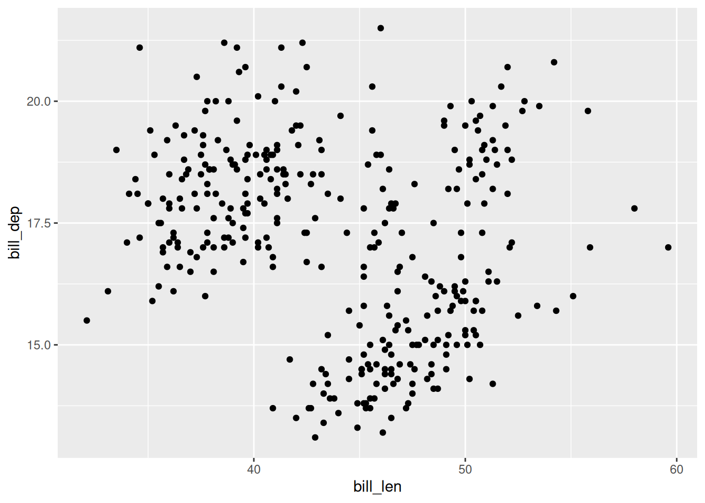

penguins species island bill_len bill_dep flipper_len body_mass sex year
1 Adelie Torgersen 39.1 18.7 181 3750 male 2007
2 Adelie Torgersen 39.5 17.4 186 3800 female 2007
3 Adelie Torgersen 40.3 18.0 195 3250 female 2007
4 Adelie Torgersen NA NA NA NA <NA> 2007
5 Adelie Torgersen 36.7 19.3 193 3450 female 2007
6 Adelie Torgersen 39.3 20.6 190 3650 male 2007
7 Adelie Torgersen 38.9 17.8 181 3625 female 2007
8 Adelie Torgersen 39.2 19.6 195 4675 male 2007
9 Adelie Torgersen 34.1 18.1 193 3475 <NA> 2007
10 Adelie Torgersen 42.0 20.2 190 4250 <NA> 2007
11 Adelie Torgersen 37.8 17.1 186 3300 <NA> 2007
12 Adelie Torgersen 37.8 17.3 180 3700 <NA> 2007
13 Adelie Torgersen 41.1 17.6 182 3200 female 2007
14 Adelie Torgersen 38.6 21.2 191 3800 male 2007
15 Adelie Torgersen 34.6 21.1 198 4400 male 2007
16 Adelie Torgersen 36.6 17.8 185 3700 female 2007
17 Adelie Torgersen 38.7 19.0 195 3450 female 2007
18 Adelie Torgersen 42.5 20.7 197 4500 male 2007
19 Adelie Torgersen 34.4 18.4 184 3325 female 2007
20 Adelie Torgersen 46.0 21.5 194 4200 male 2007
21 Adelie Biscoe 37.8 18.3 174 3400 female 2007
22 Adelie Biscoe 37.7 18.7 180 3600 male 2007
23 Adelie Biscoe 35.9 19.2 189 3800 female 2007
24 Adelie Biscoe 38.2 18.1 185 3950 male 2007
25 Adelie Biscoe 38.8 17.2 180 3800 male 2007
26 Adelie Biscoe 35.3 18.9 187 3800 female 2007
27 Adelie Biscoe 40.6 18.6 183 3550 male 2007
28 Adelie Biscoe 40.5 17.9 187 3200 female 2007
29 Adelie Biscoe 37.9 18.6 172 3150 female 2007
30 Adelie Biscoe 40.5 18.9 180 3950 male 2007
31 Adelie Dream 39.5 16.7 178 3250 female 2007
32 Adelie Dream 37.2 18.1 178 3900 male 2007
33 Adelie Dream 39.5 17.8 188 3300 female 2007
34 Adelie Dream 40.9 18.9 184 3900 male 2007
35 Adelie Dream 36.4 17.0 195 3325 female 2007
36 Adelie Dream 39.2 21.1 196 4150 male 2007
37 Adelie Dream 38.8 20.0 190 3950 male 2007
38 Adelie Dream 42.2 18.5 180 3550 female 2007
39 Adelie Dream 37.6 19.3 181 3300 female 2007
40 Adelie Dream 39.8 19.1 184 4650 male 2007
41 Adelie Dream 36.5 18.0 182 3150 female 2007
42 Adelie Dream 40.8 18.4 195 3900 male 2007
43 Adelie Dream 36.0 18.5 186 3100 female 2007
44 Adelie Dream 44.1 19.7 196 4400 male 2007
45 Adelie Dream 37.0 16.9 185 3000 female 2007
46 Adelie Dream 39.6 18.8 190 4600 male 2007
47 Adelie Dream 41.1 19.0 182 3425 male 2007
48 Adelie Dream 37.5 18.9 179 2975 <NA> 2007
49 Adelie Dream 36.0 17.9 190 3450 female 2007
50 Adelie Dream 42.3 21.2 191 4150 male 2007
51 Adelie Biscoe 39.6 17.7 186 3500 female 2008
52 Adelie Biscoe 40.1 18.9 188 4300 male 2008
53 Adelie Biscoe 35.0 17.9 190 3450 female 2008
54 Adelie Biscoe 42.0 19.5 200 4050 male 2008
55 Adelie Biscoe 34.5 18.1 187 2900 female 2008
56 Adelie Biscoe 41.4 18.6 191 3700 male 2008
57 Adelie Biscoe 39.0 17.5 186 3550 female 2008
58 Adelie Biscoe 40.6 18.8 193 3800 male 2008
59 Adelie Biscoe 36.5 16.6 181 2850 female 2008
60 Adelie Biscoe 37.6 19.1 194 3750 male 2008
61 Adelie Biscoe 35.7 16.9 185 3150 female 2008
62 Adelie Biscoe 41.3 21.1 195 4400 male 2008
63 Adelie Biscoe 37.6 17.0 185 3600 female 2008
64 Adelie Biscoe 41.1 18.2 192 4050 male 2008
65 Adelie Biscoe 36.4 17.1 184 2850 female 2008
66 Adelie Biscoe 41.6 18.0 192 3950 male 2008
67 Adelie Biscoe 35.5 16.2 195 3350 female 2008
68 Adelie Biscoe 41.1 19.1 188 4100 male 2008
69 Adelie Torgersen 35.9 16.6 190 3050 female 2008
70 Adelie Torgersen 41.8 19.4 198 4450 male 2008
71 Adelie Torgersen 33.5 19.0 190 3600 female 2008
72 Adelie Torgersen 39.7 18.4 190 3900 male 2008
73 Adelie Torgersen 39.6 17.2 196 3550 female 2008
74 Adelie Torgersen 45.8 18.9 197 4150 male 2008
75 Adelie Torgersen 35.5 17.5 190 3700 female 2008
76 Adelie Torgersen 42.8 18.5 195 4250 male 2008
77 Adelie Torgersen 40.9 16.8 191 3700 female 2008
78 Adelie Torgersen 37.2 19.4 184 3900 male 2008
79 Adelie Torgersen 36.2 16.1 187 3550 female 2008
80 Adelie Torgersen 42.1 19.1 195 4000 male 2008
81 Adelie Torgersen 34.6 17.2 189 3200 female 2008
82 Adelie Torgersen 42.9 17.6 196 4700 male 2008
83 Adelie Torgersen 36.7 18.8 187 3800 female 2008
84 Adelie Torgersen 35.1 19.4 193 4200 male 2008
85 Adelie Dream 37.3 17.8 191 3350 female 2008
86 Adelie Dream 41.3 20.3 194 3550 male 2008
87 Adelie Dream 36.3 19.5 190 3800 male 2008
88 Adelie Dream 36.9 18.6 189 3500 female 2008
89 Adelie Dream 38.3 19.2 189 3950 male 2008
90 Adelie Dream 38.9 18.8 190 3600 female 2008
91 Adelie Dream 35.7 18.0 202 3550 female 2008
92 Adelie Dream 41.1 18.1 205 4300 male 2008
93 Adelie Dream 34.0 17.1 185 3400 female 2008
94 Adelie Dream 39.6 18.1 186 4450 male 2008
95 Adelie Dream 36.2 17.3 187 3300 female 2008
96 Adelie Dream 40.8 18.9 208 4300 male 2008
97 Adelie Dream 38.1 18.6 190 3700 female 2008
98 Adelie Dream 40.3 18.5 196 4350 male 2008
99 Adelie Dream 33.1 16.1 178 2900 female 2008
100 Adelie Dream 43.2 18.5 192 4100 male 2008
101 Adelie Biscoe 35.0 17.9 192 3725 female 2009
102 Adelie Biscoe 41.0 20.0 203 4725 male 2009
103 Adelie Biscoe 37.7 16.0 183 3075 female 2009
104 Adelie Biscoe 37.8 20.0 190 4250 male 2009
105 Adelie Biscoe 37.9 18.6 193 2925 female 2009
106 Adelie Biscoe 39.7 18.9 184 3550 male 2009
107 Adelie Biscoe 38.6 17.2 199 3750 female 2009
108 Adelie Biscoe 38.2 20.0 190 3900 male 2009
109 Adelie Biscoe 38.1 17.0 181 3175 female 2009
110 Adelie Biscoe 43.2 19.0 197 4775 male 2009
111 Adelie Biscoe 38.1 16.5 198 3825 female 2009
112 Adelie Biscoe 45.6 20.3 191 4600 male 2009
113 Adelie Biscoe 39.7 17.7 193 3200 female 2009
114 Adelie Biscoe 42.2 19.5 197 4275 male 2009
115 Adelie Biscoe 39.6 20.7 191 3900 female 2009
116 Adelie Biscoe 42.7 18.3 196 4075 male 2009
117 Adelie Torgersen 38.6 17.0 188 2900 female 2009
118 Adelie Torgersen 37.3 20.5 199 3775 male 2009
119 Adelie Torgersen 35.7 17.0 189 3350 female 2009
120 Adelie Torgersen 41.1 18.6 189 3325 male 2009
121 Adelie Torgersen 36.2 17.2 187 3150 female 2009
122 Adelie Torgersen 37.7 19.8 198 3500 male 2009
123 Adelie Torgersen 40.2 17.0 176 3450 female 2009
124 Adelie Torgersen 41.4 18.5 202 3875 male 2009
125 Adelie Torgersen 35.2 15.9 186 3050 female 2009
126 Adelie Torgersen 40.6 19.0 199 4000 male 2009
127 Adelie Torgersen 38.8 17.6 191 3275 female 2009
128 Adelie Torgersen 41.5 18.3 195 4300 male 2009
129 Adelie Torgersen 39.0 17.1 191 3050 female 2009
130 Adelie Torgersen 44.1 18.0 210 4000 male 2009
131 Adelie Torgersen 38.5 17.9 190 3325 female 2009
132 Adelie Torgersen 43.1 19.2 197 3500 male 2009
133 Adelie Dream 36.8 18.5 193 3500 female 2009
134 Adelie Dream 37.5 18.5 199 4475 male 2009
135 Adelie Dream 38.1 17.6 187 3425 female 2009
136 Adelie Dream 41.1 17.5 190 3900 male 2009
137 Adelie Dream 35.6 17.5 191 3175 female 2009
138 Adelie Dream 40.2 20.1 200 3975 male 2009
139 Adelie Dream 37.0 16.5 185 3400 female 2009
140 Adelie Dream 39.7 17.9 193 4250 male 2009
141 Adelie Dream 40.2 17.1 193 3400 female 2009
142 Adelie Dream 40.6 17.2 187 3475 male 2009
143 Adelie Dream 32.1 15.5 188 3050 female 2009
144 Adelie Dream 40.7 17.0 190 3725 male 2009
145 Adelie Dream 37.3 16.8 192 3000 female 2009
146 Adelie Dream 39.0 18.7 185 3650 male 2009
147 Adelie Dream 39.2 18.6 190 4250 male 2009
148 Adelie Dream 36.6 18.4 184 3475 female 2009
149 Adelie Dream 36.0 17.8 195 3450 female 2009
150 Adelie Dream 37.8 18.1 193 3750 male 2009
151 Adelie Dream 36.0 17.1 187 3700 female 2009
152 Adelie Dream 41.5 18.5 201 4000 male 2009
153 Gentoo Biscoe 46.1 13.2 211 4500 female 2007
154 Gentoo Biscoe 50.0 16.3 230 5700 male 2007
155 Gentoo Biscoe 48.7 14.1 210 4450 female 2007
156 Gentoo Biscoe 50.0 15.2 218 5700 male 2007
157 Gentoo Biscoe 47.6 14.5 215 5400 male 2007
158 Gentoo Biscoe 46.5 13.5 210 4550 female 2007
159 Gentoo Biscoe 45.4 14.6 211 4800 female 2007
160 Gentoo Biscoe 46.7 15.3 219 5200 male 2007
161 Gentoo Biscoe 43.3 13.4 209 4400 female 2007
162 Gentoo Biscoe 46.8 15.4 215 5150 male 2007
163 Gentoo Biscoe 40.9 13.7 214 4650 female 2007
164 Gentoo Biscoe 49.0 16.1 216 5550 male 2007
165 Gentoo Biscoe 45.5 13.7 214 4650 female 2007
166 Gentoo Biscoe 48.4 14.6 213 5850 male 2007
167 Gentoo Biscoe 45.8 14.6 210 4200 female 2007
168 Gentoo Biscoe 49.3 15.7 217 5850 male 2007
169 Gentoo Biscoe 42.0 13.5 210 4150 female 2007
170 Gentoo Biscoe 49.2 15.2 221 6300 male 2007
171 Gentoo Biscoe 46.2 14.5 209 4800 female 2007
172 Gentoo Biscoe 48.7 15.1 222 5350 male 2007
173 Gentoo Biscoe 50.2 14.3 218 5700 male 2007
174 Gentoo Biscoe 45.1 14.5 215 5000 female 2007
175 Gentoo Biscoe 46.5 14.5 213 4400 female 2007
176 Gentoo Biscoe 46.3 15.8 215 5050 male 2007
177 Gentoo Biscoe 42.9 13.1 215 5000 female 2007
178 Gentoo Biscoe 46.1 15.1 215 5100 male 2007
179 Gentoo Biscoe 44.5 14.3 216 4100 <NA> 2007
180 Gentoo Biscoe 47.8 15.0 215 5650 male 2007
181 Gentoo Biscoe 48.2 14.3 210 4600 female 2007
182 Gentoo Biscoe 50.0 15.3 220 5550 male 2007
183 Gentoo Biscoe 47.3 15.3 222 5250 male 2007
184 Gentoo Biscoe 42.8 14.2 209 4700 female 2007
185 Gentoo Biscoe 45.1 14.5 207 5050 female 2007
186 Gentoo Biscoe 59.6 17.0 230 6050 male 2007
187 Gentoo Biscoe 49.1 14.8 220 5150 female 2008
188 Gentoo Biscoe 48.4 16.3 220 5400 male 2008
189 Gentoo Biscoe 42.6 13.7 213 4950 female 2008
190 Gentoo Biscoe 44.4 17.3 219 5250 male 2008
191 Gentoo Biscoe 44.0 13.6 208 4350 female 2008
192 Gentoo Biscoe 48.7 15.7 208 5350 male 2008
193 Gentoo Biscoe 42.7 13.7 208 3950 female 2008
194 Gentoo Biscoe 49.6 16.0 225 5700 male 2008
195 Gentoo Biscoe 45.3 13.7 210 4300 female 2008
196 Gentoo Biscoe 49.6 15.0 216 4750 male 2008
197 Gentoo Biscoe 50.5 15.9 222 5550 male 2008
198 Gentoo Biscoe 43.6 13.9 217 4900 female 2008
199 Gentoo Biscoe 45.5 13.9 210 4200 female 2008
200 Gentoo Biscoe 50.5 15.9 225 5400 male 2008
201 Gentoo Biscoe 44.9 13.3 213 5100 female 2008
202 Gentoo Biscoe 45.2 15.8 215 5300 male 2008
203 Gentoo Biscoe 46.6 14.2 210 4850 female 2008
204 Gentoo Biscoe 48.5 14.1 220 5300 male 2008
205 Gentoo Biscoe 45.1 14.4 210 4400 female 2008
206 Gentoo Biscoe 50.1 15.0 225 5000 male 2008
207 Gentoo Biscoe 46.5 14.4 217 4900 female 2008
208 Gentoo Biscoe 45.0 15.4 220 5050 male 2008
209 Gentoo Biscoe 43.8 13.9 208 4300 female 2008
210 Gentoo Biscoe 45.5 15.0 220 5000 male 2008
211 Gentoo Biscoe 43.2 14.5 208 4450 female 2008
212 Gentoo Biscoe 50.4 15.3 224 5550 male 2008
213 Gentoo Biscoe 45.3 13.8 208 4200 female 2008
214 Gentoo Biscoe 46.2 14.9 221 5300 male 2008
215 Gentoo Biscoe 45.7 13.9 214 4400 female 2008
216 Gentoo Biscoe 54.3 15.7 231 5650 male 2008
217 Gentoo Biscoe 45.8 14.2 219 4700 female 2008
218 Gentoo Biscoe 49.8 16.8 230 5700 male 2008
219 Gentoo Biscoe 46.2 14.4 214 4650 <NA> 2008
220 Gentoo Biscoe 49.5 16.2 229 5800 male 2008
221 Gentoo Biscoe 43.5 14.2 220 4700 female 2008
222 Gentoo Biscoe 50.7 15.0 223 5550 male 2008
223 Gentoo Biscoe 47.7 15.0 216 4750 female 2008
224 Gentoo Biscoe 46.4 15.6 221 5000 male 2008
225 Gentoo Biscoe 48.2 15.6 221 5100 male 2008
226 Gentoo Biscoe 46.5 14.8 217 5200 female 2008
227 Gentoo Biscoe 46.4 15.0 216 4700 female 2008
228 Gentoo Biscoe 48.6 16.0 230 5800 male 2008
229 Gentoo Biscoe 47.5 14.2 209 4600 female 2008
230 Gentoo Biscoe 51.1 16.3 220 6000 male 2008
231 Gentoo Biscoe 45.2 13.8 215 4750 female 2008
232 Gentoo Biscoe 45.2 16.4 223 5950 male 2008
233 Gentoo Biscoe 49.1 14.5 212 4625 female 2009
234 Gentoo Biscoe 52.5 15.6 221 5450 male 2009
235 Gentoo Biscoe 47.4 14.6 212 4725 female 2009
236 Gentoo Biscoe 50.0 15.9 224 5350 male 2009
237 Gentoo Biscoe 44.9 13.8 212 4750 female 2009
238 Gentoo Biscoe 50.8 17.3 228 5600 male 2009
239 Gentoo Biscoe 43.4 14.4 218 4600 female 2009
240 Gentoo Biscoe 51.3 14.2 218 5300 male 2009
241 Gentoo Biscoe 47.5 14.0 212 4875 female 2009
242 Gentoo Biscoe 52.1 17.0 230 5550 male 2009
243 Gentoo Biscoe 47.5 15.0 218 4950 female 2009
244 Gentoo Biscoe 52.2 17.1 228 5400 male 2009
245 Gentoo Biscoe 45.5 14.5 212 4750 female 2009
246 Gentoo Biscoe 49.5 16.1 224 5650 male 2009
247 Gentoo Biscoe 44.5 14.7 214 4850 female 2009
248 Gentoo Biscoe 50.8 15.7 226 5200 male 2009
249 Gentoo Biscoe 49.4 15.8 216 4925 male 2009
250 Gentoo Biscoe 46.9 14.6 222 4875 female 2009
251 Gentoo Biscoe 48.4 14.4 203 4625 female 2009
252 Gentoo Biscoe 51.1 16.5 225 5250 male 2009
253 Gentoo Biscoe 48.5 15.0 219 4850 female 2009
254 Gentoo Biscoe 55.9 17.0 228 5600 male 2009
255 Gentoo Biscoe 47.2 15.5 215 4975 female 2009
256 Gentoo Biscoe 49.1 15.0 228 5500 male 2009
257 Gentoo Biscoe 47.3 13.8 216 4725 <NA> 2009
258 Gentoo Biscoe 46.8 16.1 215 5500 male 2009
259 Gentoo Biscoe 41.7 14.7 210 4700 female 2009
260 Gentoo Biscoe 53.4 15.8 219 5500 male 2009
261 Gentoo Biscoe 43.3 14.0 208 4575 female 2009
262 Gentoo Biscoe 48.1 15.1 209 5500 male 2009
263 Gentoo Biscoe 50.5 15.2 216 5000 female 2009
264 Gentoo Biscoe 49.8 15.9 229 5950 male 2009
265 Gentoo Biscoe 43.5 15.2 213 4650 female 2009
266 Gentoo Biscoe 51.5 16.3 230 5500 male 2009
267 Gentoo Biscoe 46.2 14.1 217 4375 female 2009
268 Gentoo Biscoe 55.1 16.0 230 5850 male 2009
269 Gentoo Biscoe 44.5 15.7 217 4875 <NA> 2009
270 Gentoo Biscoe 48.8 16.2 222 6000 male 2009
271 Gentoo Biscoe 47.2 13.7 214 4925 female 2009
272 Gentoo Biscoe NA NA NA NA <NA> 2009
273 Gentoo Biscoe 46.8 14.3 215 4850 female 2009
274 Gentoo Biscoe 50.4 15.7 222 5750 male 2009
275 Gentoo Biscoe 45.2 14.8 212 5200 female 2009
276 Gentoo Biscoe 49.9 16.1 213 5400 male 2009
277 Chinstrap Dream 46.5 17.9 192 3500 female 2007
278 Chinstrap Dream 50.0 19.5 196 3900 male 2007
279 Chinstrap Dream 51.3 19.2 193 3650 male 2007
280 Chinstrap Dream 45.4 18.7 188 3525 female 2007
281 Chinstrap Dream 52.7 19.8 197 3725 male 2007
282 Chinstrap Dream 45.2 17.8 198 3950 female 2007
283 Chinstrap Dream 46.1 18.2 178 3250 female 2007
284 Chinstrap Dream 51.3 18.2 197 3750 male 2007
285 Chinstrap Dream 46.0 18.9 195 4150 female 2007
286 Chinstrap Dream 51.3 19.9 198 3700 male 2007
287 Chinstrap Dream 46.6 17.8 193 3800 female 2007
288 Chinstrap Dream 51.7 20.3 194 3775 male 2007
289 Chinstrap Dream 47.0 17.3 185 3700 female 2007
290 Chinstrap Dream 52.0 18.1 201 4050 male 2007
291 Chinstrap Dream 45.9 17.1 190 3575 female 2007
292 Chinstrap Dream 50.5 19.6 201 4050 male 2007
293 Chinstrap Dream 50.3 20.0 197 3300 male 2007
294 Chinstrap Dream 58.0 17.8 181 3700 female 2007
295 Chinstrap Dream 46.4 18.6 190 3450 female 2007
296 Chinstrap Dream 49.2 18.2 195 4400 male 2007
297 Chinstrap Dream 42.4 17.3 181 3600 female 2007
298 Chinstrap Dream 48.5 17.5 191 3400 male 2007
299 Chinstrap Dream 43.2 16.6 187 2900 female 2007
300 Chinstrap Dream 50.6 19.4 193 3800 male 2007
301 Chinstrap Dream 46.7 17.9 195 3300 female 2007
302 Chinstrap Dream 52.0 19.0 197 4150 male 2007
303 Chinstrap Dream 50.5 18.4 200 3400 female 2008
304 Chinstrap Dream 49.5 19.0 200 3800 male 2008
305 Chinstrap Dream 46.4 17.8 191 3700 female 2008
306 Chinstrap Dream 52.8 20.0 205 4550 male 2008
307 Chinstrap Dream 40.9 16.6 187 3200 female 2008
308 Chinstrap Dream 54.2 20.8 201 4300 male 2008
309 Chinstrap Dream 42.5 16.7 187 3350 female 2008
310 Chinstrap Dream 51.0 18.8 203 4100 male 2008
311 Chinstrap Dream 49.7 18.6 195 3600 male 2008
312 Chinstrap Dream 47.5 16.8 199 3900 female 2008
313 Chinstrap Dream 47.6 18.3 195 3850 female 2008
314 Chinstrap Dream 52.0 20.7 210 4800 male 2008
315 Chinstrap Dream 46.9 16.6 192 2700 female 2008
316 Chinstrap Dream 53.5 19.9 205 4500 male 2008
317 Chinstrap Dream 49.0 19.5 210 3950 male 2008
318 Chinstrap Dream 46.2 17.5 187 3650 female 2008
319 Chinstrap Dream 50.9 19.1 196 3550 male 2008
320 Chinstrap Dream 45.5 17.0 196 3500 female 2008
321 Chinstrap Dream 50.9 17.9 196 3675 female 2009
322 Chinstrap Dream 50.8 18.5 201 4450 male 2009
323 Chinstrap Dream 50.1 17.9 190 3400 female 2009
324 Chinstrap Dream 49.0 19.6 212 4300 male 2009
325 Chinstrap Dream 51.5 18.7 187 3250 male 2009
326 Chinstrap Dream 49.8 17.3 198 3675 female 2009
327 Chinstrap Dream 48.1 16.4 199 3325 female 2009
328 Chinstrap Dream 51.4 19.0 201 3950 male 2009
329 Chinstrap Dream 45.7 17.3 193 3600 female 2009
330 Chinstrap Dream 50.7 19.7 203 4050 male 2009
331 Chinstrap Dream 42.5 17.3 187 3350 female 2009
332 Chinstrap Dream 52.2 18.8 197 3450 male 2009
333 Chinstrap Dream 45.2 16.6 191 3250 female 2009
334 Chinstrap Dream 49.3 19.9 203 4050 male 2009
335 Chinstrap Dream 50.2 18.8 202 3800 male 2009
336 Chinstrap Dream 45.6 19.4 194 3525 female 2009
337 Chinstrap Dream 51.9 19.5 206 3950 male 2009
338 Chinstrap Dream 46.8 16.5 189 3650 female 2009
339 Chinstrap Dream 45.7 17.0 195 3650 female 2009
340 Chinstrap Dream 55.8 19.8 207 4000 male 2009
341 Chinstrap Dream 43.5 18.1 202 3400 female 2009
342 Chinstrap Dream 49.6 18.2 193 3775 male 2009
343 Chinstrap Dream 50.8 19.0 210 4100 male 2009
344 Chinstrap Dream 50.2 18.7 198 3775 female 2009ggplot(penguins, aes(x = bill_len, y = bill_dep)) +
geom_point()Warning: Removed 2 rows containing missing values or values outside the scale range
(`geom_point()`).